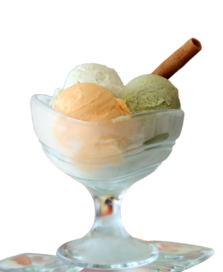

Vanilla's journey begins long before it reaches a bottle of extract or a favorite family recipe. Grown from the fruit of a tropical orchid, vanilla is cultivated in regions around the world, each producing beans with distinct flavors, aromas, and culinary strengths. Just as coffee, wine, and cacao reflect their origins, vanilla develops unique characteristics based on where it is grown and how it is cured.
VIndia's ice cream industry has undergone a remarkable transformation over the past few decades—from a largely seasonal and unorganised segment to a thriving market marked by innovation, intense competition and growing consumer demand. Traditionally associated with summer indulgence, ice cream has steadily evolved into a year-round treat, supported by rising incomes, urbanisation and a youthful demographic that increasingly seeks convenience and novelty in food choices.

There's so much to write and talk about chocolate, that it is never enough. With a rather impressive history, this fine flavored ingredient has been known to mankind since time of the Mayans and Aztecs. Such is the beauty of chocolate, that these civilizations considered it sacred. It was typically consumed as drink made from ground cacao beans mixed with hot water and, at times, spices - that they referred to it as the 'Food of the Gods.'